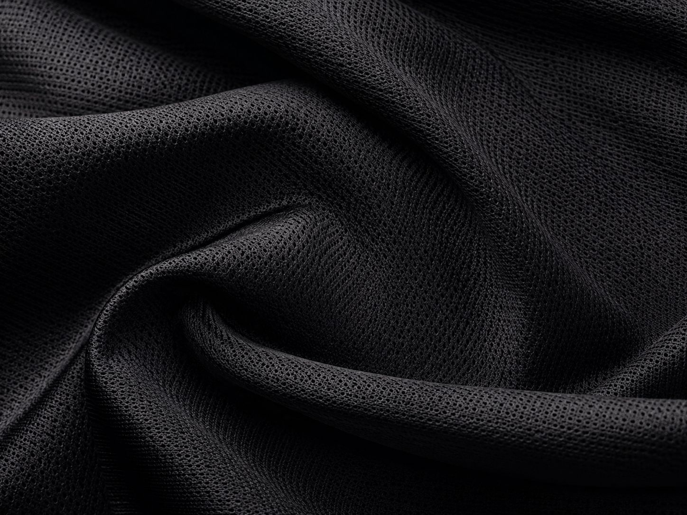
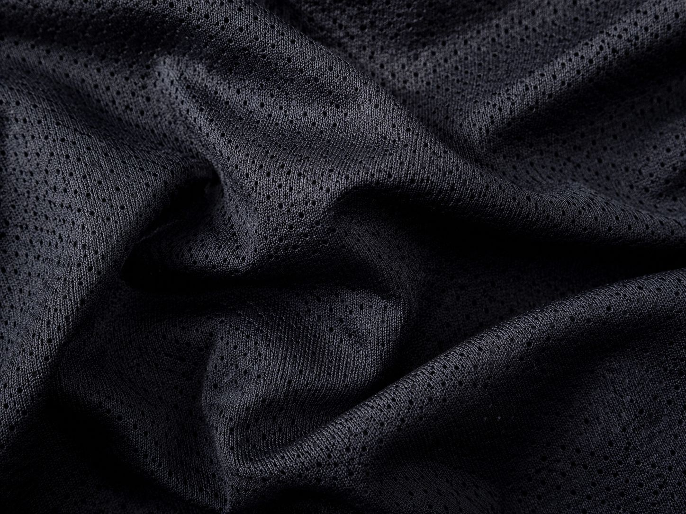
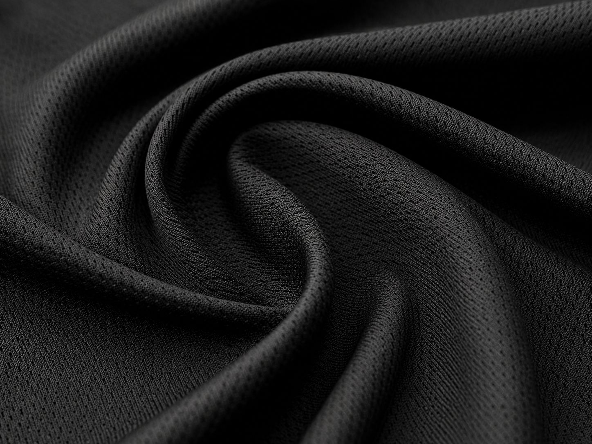
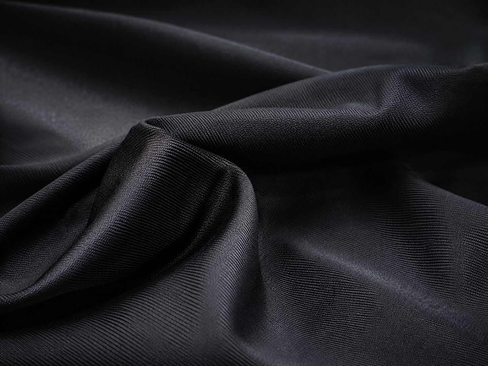
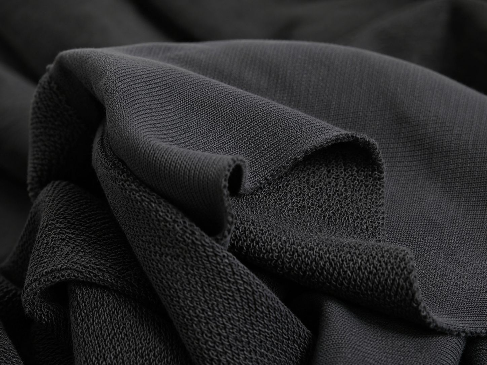
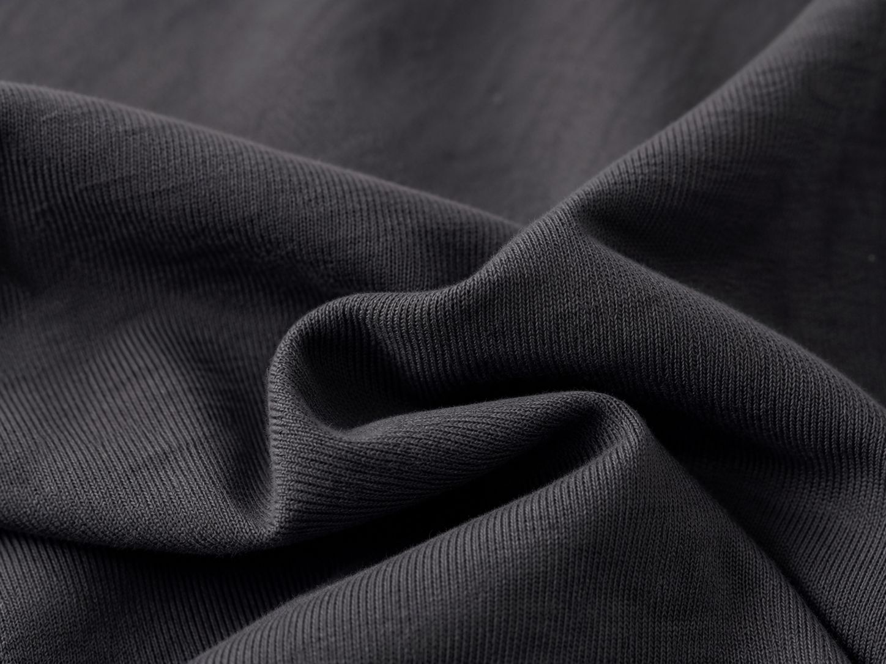
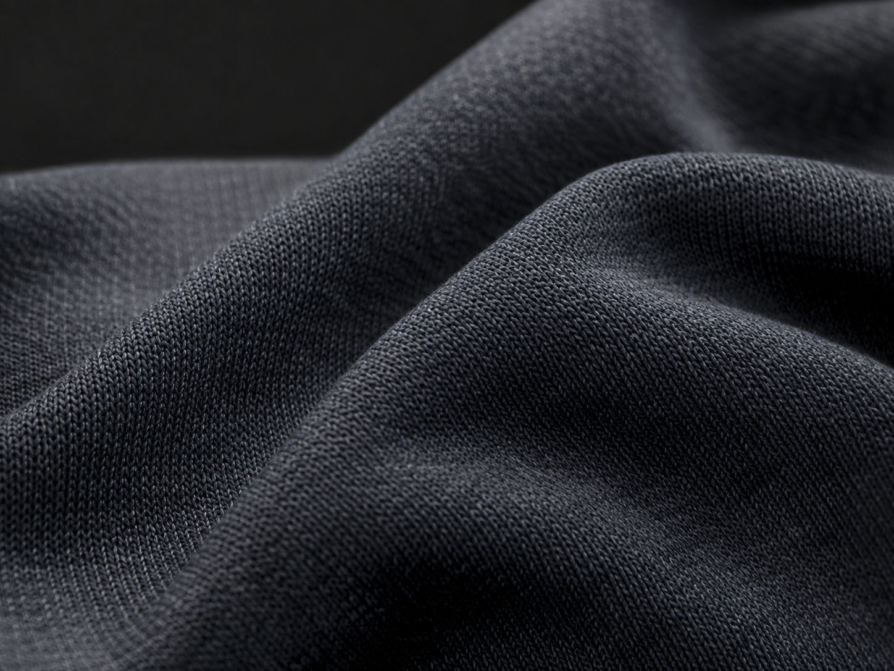
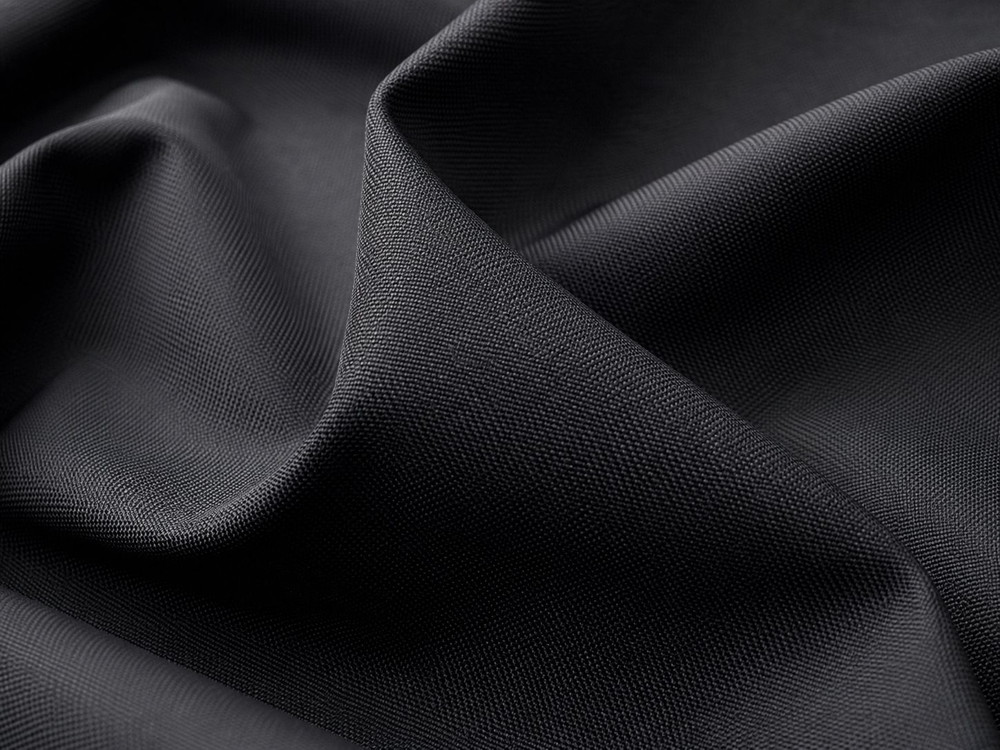

Explore performance fabrics used by UZ Industry for custom sportswear, team uniforms, training wear and athletic apparel. Select any fabric to learn about its properties, benefits and recommended applications.

Lightweight and durable fabric developed for performance sportswear.
View Fabric Details →
Breathable mesh structure designed for airflow and active performance.
View Fabric Details →
Fine mesh ventilation for lightweight high-intensity sportswear.
View Fabric Details →
Smooth and strong construction with excellent shape retention.
View Fabric Details →
Moisture-management performance fabric for training and teamwear.
View Fabric Details →
Highly flexible stretch fabric for fitted performance garments.
View Fabric Details →
Durable knitted fabric suitable for uniforms and tracksuits.
View Fabric Details →
Warm and comfortable fabric for hoodies and winter teamwear.
View Fabric Details →
Soft loop-back fabric offering comfort and everyday versatility.
View Fabric Details →
Comfort-focused fabric with a soft natural feel and practical durability.
View Fabric Details →
Tough lightweight woven material suitable for outerwear and sports shorts.
View Fabric Details →
Stretchable knitted construction ideal for collars, cuffs and trims.
View Fabric Details →